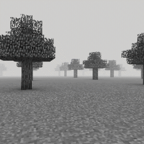

".olleH"
- Nameless Stalker

Wonderland[D] is a risky, Plane type Layer 1 dimension accessible from either Inconsistency or Sequence. It is the namesake of the anomaly and acts as a sort of 'hub-world' for the first layer of the entirety of Wonderland[A]. The large-scale purpose of this dimension is currently unknown,
but it can be used as a gateway to many other Layer 1 dimensions and as a way to descend deeper into Layer 2. On top of that, many structures contain some sort of loot here which one might find useful.
The landscape is shaped by trees formed in a grid pattern on top of lush green grass. Many structures and formations can be found with varying nature. This dimension holds the largest known count of unique structures.
Most entities here are largely passive. However, it is ill advised to let oneself be comfortable. Provoking the inhabitants can prove to be deceptively easy. When exploring, one may also find some of the more powerful entities like the Nameless One stalking them. Although, there is no recorded instance of them attacking anyone inside of the Wonderland[D].
The primary exit method of this dimension is by either finding a structure containing a portal or a gape into the void leading to Layer 2. You may also sleep in order to be transported into Winter Wonderland. Either way will only lead you deeper into the Wonderland[A].
Threat level: 1
Layer: 1
Name: Wonderland
Type: Plane